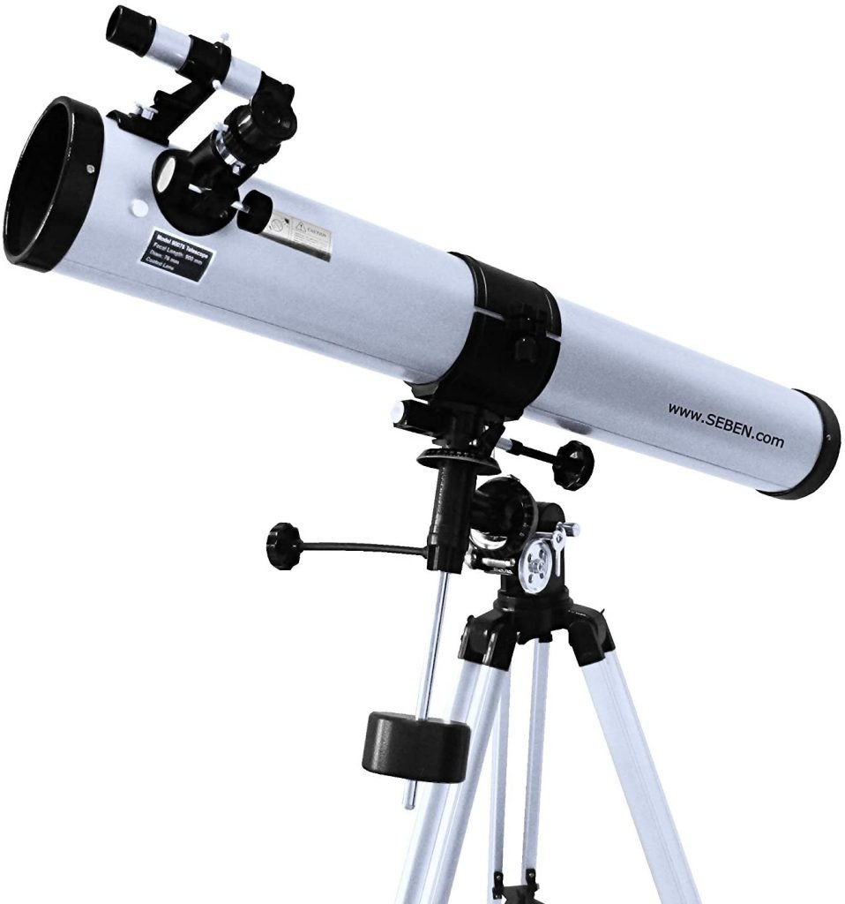
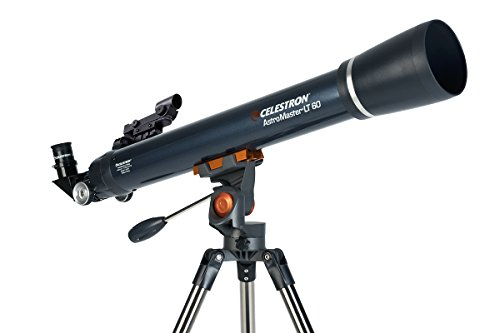

A los telescopios cuyo sistema optico está formado por lentes se les conoce como telescopios refractores. Estas lentes están fabricadas de vidrio que tiene la propiedad de refractar ("curvar") la luz que pasa a través de él.El diseño básico de un telescopio refractor (conocido como telescopio kepleriano) consta de una lente divergente (lupa) llamada objetivo situada en el extremo de un tubo y de otra lente divergente más pequeña situada en el extremo opuesto conocida como ocular.
Un telescopio reflector es un tipo de telescopio que se caracteriza por el uso de espejos en lugar de lentes para conseguir obtener una imagen nítida y de calidad del objeto observado cuando se lleva a cabo el estudio del cielo nocturno. El origen del telescopio reflector es realmente incierto, ya que su sistema es realmente sencillo, lo que hace que su invención pudiera remontarse tiempo atrás a las primeras documentaciones disponibles que tenemos sobre en el.
Telescopios catadioptricos. La característica fundamental de este tipo de telescopios es que es una combinación de los dos sistemas anteriores. La luz llega al espejo primario, desviado por una lente correctora, que ayuda a compensar o minimizar la aberración esférica y de coma que genera el espejo.